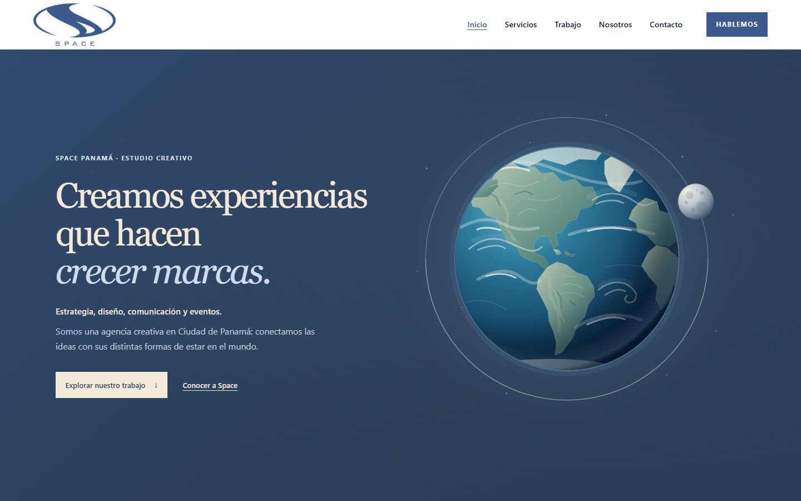
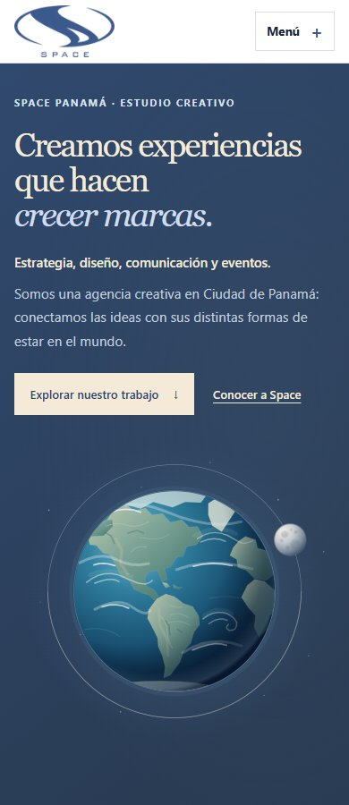
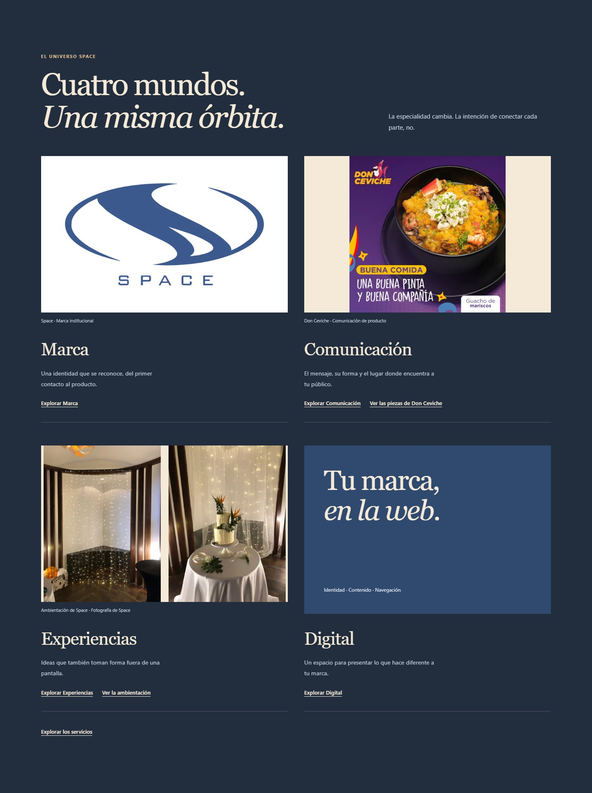
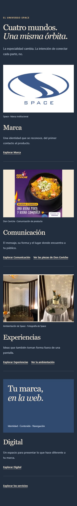
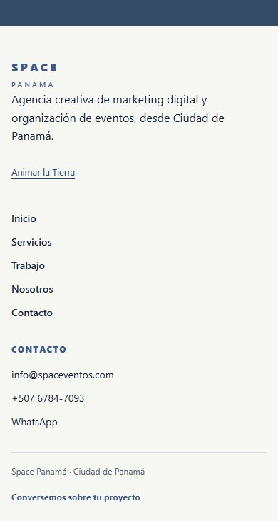
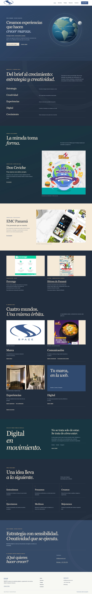

SPACE PANAMÁ · REVISIÓN LOCAL 09 · PENDIENTE DE REVISIÓN DEL DUEÑO
Cuatro mundos, con evidencia y sin flechas diagonales.
Capturas reales de la versión local actual. Se conserva la composición Tierra–Luna y el recorrido editorial; navegación sin control de movimiento. La escena carga quieta y la órbita es opcional desde el pie, con salida rápida de teclado y prioridad del movimiento reducido del dispositivo.
Evidencia antes que relleno. Marca usa la identidad institucional de Space, no un caso de cliente sin confirmar. Comunicación muestra una pieza autorizada de Don Ceviche; Experiencias, fotos de ambientación de Space. Digital sigue editorial: no hay capturas de sitios cliente con autoría y permiso verificables. La lista documenta qué falta y por qué los candidatos no equivalen a entregables aprobados. No se usaron obras ni registros de participantes. Sin commit, push, merge ni despliegue.
Hero conservado · navegación limpia


Retícula editorial · dos columnas y una


Movimiento opcional, fuera del recorrido principal

Ver Home completa en escritorio y móvil

Chrome y viewports emulados; no es aprobación final ni certificación integral de accesibilidad. Las revisiones 04–08 se conservan como historial, no como capturas de los controles actuales.